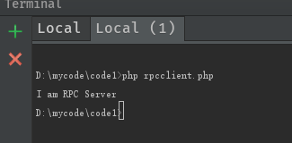

Rpc远程调用的学习笔记
RPC：Remote Procedure Call
Rpc相信对于单机开发的来说感觉很有逼格，甚至听都没有听过，我们单机开发的话，写个服务类，然后本地调用下，这些程序的特点是服务消费方和服务提供方都是本地调用关系
而稍微大型的公司，公司的系统都是由成千上万大大小小的服务组成，各服务部署在不同的机器上。由不同的团队来进行维护和负责，程序的特点是服务消费方和服务提供方式远程调用关系
本篇文章模拟远程调用并探究其原理
本片文章的内容主要分为以下几部分
- 服务端创建socket服务，利用HTTP协议和自己“胡乱”的协议内容来约定调用的类 并监听客户端连接
- 客户端调用我们定义的类，并输出数据
创建服务端
新建服务类
service/news.php1
2
3
4
5
6
7
8
9
10
11
12
13<?php
class NewsService
{
function display()
{
return 'I am RPC Server';
}
function showName()
{
return 'zhangSan';
}
}
rpcserver.php1
2
3
4
5
6
7
8
9
10
11
12
13
14
15
16
17
18
19
20
21
22
23
24
25
26
27
28
29
30
31
32
33
34
35
36
37
38
39
40
41
42
43
44
45
46
47
48
49
50
51
52
53
54
55
56
57
58
59
60
61
62
63
64
65
66
67
68
69
70
71
72
73
74
75
76
77
78
79
80
<?php
$socket = socket_create(AF_INET,SOCK_STREAM,SOL_TCP); // 购买电话机
socket_bind($socket,'127.0.0.1',8070); // 绑定电话机
socket_listen($socket,5); // 开机
while(true) {
$client=socket_accept(($socket));//有人打电话进来
$buf=socket_read($client,1024);//读取客户端发送的数据
//如果匹配到是http请求头
if(preg_match("/GET\s\/(.*?)\sHTTP\/1.1/i",$buf,$matches)) {
//匹配到请求资源的路径
$path = $matches[1];
//加载类的文件
if (file_exists($path)) {
//加载类文
require_once $path;
//从已经有的类中取出我们想要的类
$classes = get_declared_classes();
//找到最后一个类使我们所需要的
$obj_class_name = end($classes);
//实例化调用类
$obj = new $obj_class_name();
$result = '';
//匹配自定义协议的调用的方法
if (preg_match("/SEVEN\s(.*?)\s/i",$buf,$matches)) {
//获取自定义协议中的方法名子
$methodname=$matches[1];
$result=$obj->$methodname();
socket_write($client,$result);
} else {
socket_write($client,"no method is required!");
}
} else {
socket_write($client,"file is no exists!");
}
} else {
//回复
socket_write($client,'hello socket,you an not http!');
}
socket_close($client);
}
socket_close($socket);
```
## 创建客户端
``` bash
<?php
class RpcClient
{
public $service;
public $request='';
function __construct($serviceurl)
{
//保存解析后的URl
$this->service=parse_url($serviceurl);
//构造基于http协议的请求头
$this->request='GET '.$this->service['path'].' HTTP/1.1'.PHP_EOL;
}
function __call($name, $arguments)
{
// TODO: Implement __call() method.
//创建socket
$clinet=socket_create(AF_INET,SOCK_STREAM,SOL_TCP);
//与服务端建立连接
socket_connect($clinet,$this->service['host'],$this->service['port']);
//拼接我们自定义的协议
$this->request.='SEVEN '.$name.PHP_EOL;
socket_write($clinet,$this->request);
//读取服务端的信息
$buf=socket_read($clinet,1024);
socket_close($clinet);
return $buf;
}
}
启动服务端，我们可以使用下面代码调用我们的远程接口1
2
3
4
//实例化
$client = new RpcClient("http://127.0.0.1:8070/service/news.php");
echo $client->display();
输出我们服务端的新闻类方法的输出
